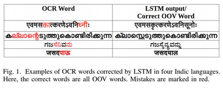
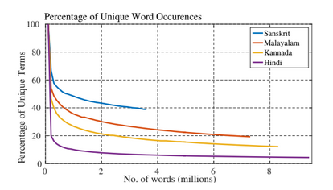
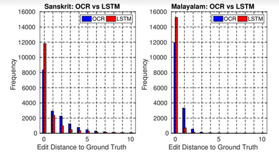
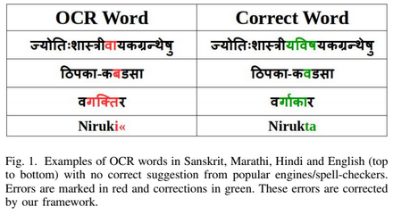
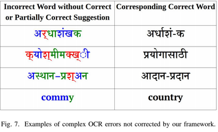
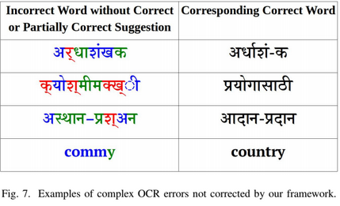

1.“Detecting, Tracking and Counting Motorcycle Rider Traffic Violations on Unconstrained Roads”, Aman Goyal, Dev Agarwal, Anbumani Subramanian, C. V. Jawahar, Ravi Kiran Sarvadevabhatla, and Rohit Saluja. CVPR Workshop on Bridging the Gap between Computational Photography and Visual Recognition (UG2+), 2022.
You can read the paperhere
2.“FLUID: Few-Shot Self-Supervised Image Deraining”, Shyam Nandan Rai, Rohit Saluja, Chetan Arora, Vineeth N. Balasubramanian, Anbumani Subramanian, and C. V. Jawahar. In Proceedings of the IEEE/CVF Winter Conference on Applications of Computer Vision, pp. 3077-3086. 2022.
You can read the paperhere
3.“To miss-attend is to misalign! Residual Self-Attentive Feature Alignment for Adapting Object Detectors”, Vaishnavi Khindkar, Chetan Arora, Vineeth N. Balasubramanian, Anbumani Subramanian, Rohit Saluja, and C. V. Jawahar. In Proceedings of the IEEE/CVF Winter Conference on Applications of Computer Vision (WACV), 2022.
You can read the paperhere
4.“Multi-Domain Incremental Learning for Semantic Segmentation”, Prachi Garg, Rohit Saluja, Vineeth N Balasubramanian, Chetan Arora, Anbumani Subramanian, C V Jawahar, In Proceedings of the IEEE/CVF Winter Conference on Applications of Computer Vision (WACV), 2022.
You can read the paperhere
5.“Improving Scene Text Recognition for Indian Languages with Transfer Learning and Font Diversity”, Sanjana Gunna, Rohit Saluja and C V Jawahar, Journal of Imaging 8.4 (2022): 86.
You can read the paperhere
6.“ORDER: Open World Object Detection on Road Scenes”, Deepak Kumar Singh, Shyam Nandan Rai, K J Joseph, Rohit Saluja, Vineeth N Balasubramanian, Chetan Arora, Anbumani Subramanian, and C.V. Jawahar, NeurIPS 2021 Workshop on Machine Learning for Autonomous Driving, 2021.
You can read the paperhere
7.“Automatic Quantification and Visualization of Street Trees”, Arpit Bahety, Rohit Saluja, Ravi Kiran Sarvadevabhatla, Anbumani Subramanian, C.V. Jawahar, Indian Conference on Computer Vision, Graphics and Image Processing (ICVGIP) 2021.
You can read the paperhere
8.“Transfer Learning for Scene Text Recognition in Indian Languages”, Sanjana Gunna, Rohit Saluja and C V Jawahar, Camera-Based Document Analysis and Recognition (CBDAR) 2021.
You can read the paperhere
9.“CATALIST: CAmera TrAnsformations for multi-LIngual Scene Text recognition”, Shivam Sood, Rohit Saluja, Ganesh Ramakrishnan and Parag Chaudhuri, Camera-Based Document Analysis and Recognition (CBDAR) 2021.
You can read the paperhere
10.“Towards Boosting the Accuracy of Non-Latin Scene Text Recognition”, Sanjana Gunna, Rohit Saluja and C V Jawahar, International Workshop on Arabic and Derived Script Analysis and Recognition (ASAR) 2021.
You can read the paperhere
11.“Evaluating Computer Vision Techniques for Urban Mobility on Large-Scale, Unconstrained Roads”, Harish Rithish, Raghava Modhugu, Ranjith Reddy, Rohit Saluja, and C. V. Jawahar. arXiv preprint arXiv:2109.05226 (2021).
You can read the paperhere
12.“An OCR for Classical Indic Documents Containing Arbitrarily Long Words”, Agam Dwivedi, Rohit Saluja and Ravi Kiran Sarvadevabhatla. CVPR Workshop on Text and Documents in the Deep Learning Era, 2020.
You can read the paperhere
13.“OCR On-the-Go: Robust End-to-end Systems for Reading License Plates and Street Signs”, Rohit Saluja, Ayush Maheshwari, Ganesh Ramakrishnan, Parag Chaudhuri, and Mark Carman, International Conference on Document Analysis and Recognition (ICDAR) 2019, Sydney, Australia.
You can read the paperhere
14. Our team "CLAM" secured 2nd position in Multilingual PostOCR Competetion at ICDAR'19. Our model achieved
highest corrections of 44% in Finnish, which is significantly higher than overall topper (8% in Finnish).
Final report and poster available.
14.“Sub-word Embeddings for OCR Corrections in highly Fusional Indic Languages”, Rohit Saluja, Mayur Punjabi, Mark Carman, Ganesh Ramakrishnan and Parag Chaudhuri, International Conference on Document Analysis and Recognition (ICDAR) 2019, Sydney, Australia.
You can read the paperhere
15.“StreetOCRCorrect: An Interactive Framework for OCR Corrections in Chaotic Indian Street Videos.”, Pankaj Singh, Bhavya Patwa, Rohit Saluja, Ganesh Ramakrishnan, and Parag Chaudhuri, 2nd International Workshop on Open Services and Tools for Document Analysis (ICDAR- OST) 2019, Sydney, Australia.
Clickhere to read the paper
16.“Improving the learnability of classifiers for Sanskrit OCR corrections”, Devaraja Adiga, Rohit Saluja, Vaibhav Agrawal, Ganesh Ramakrishnan, Parag Chaudhuri, K. Ramasubramanian and Malhar Kulkarni, Proceedings of the 17th World Sanskrit Conference, Vancouver, 2018.
You can read the paperhere
17.“Development of an adaptive framework for end-to-end corrections in Indic OCR”, Ganesh Ramakrishnan and Parag Chaudhuri, IIT Bombay Impactful Research Award, 2017.
Presentation
17.“Error Detection and Corrections in Indic OCR using LSTMs”, Rohit Saluja, Devaraj Adiga, Parag Chaudhuri, Ganesh Ramakrishnan and Mark Carman, International Conference on Document Analysis and Recognition (ICDAR) 2017, Kyoto, Japan.
You can read the paperhere



18.“A Framework for Document Specific Error Detection and Corrections in Indic OCR”, Rohit Saluja, Devaraj Adiga, Ganesh Ramakrishnan, Parag Chaudhuri and Mark Carman, 1st International Workshop on Open Services and Tools for Document Analysis (ICDAR- OST) 2017, Kyoto, Japan.
Clickhere to read the paper

 

19.“Leaf Counting in Rice (Oryza Sativa L.) Using Object Detection: A Deep Learning Approach”, Mukesh Kumar Vishal, Biplab Banerjee, Rohit Saluja, Dhandapani Raju, Viswanathan Chinnusamy, Sudhir Kumar, Rabi Narayan Sahoo, and Jagarlapudi Adinarayana. In IEEE International Geoscience and Remote Sensing Symposium (IGRASS), pp. 5286-5289. IEEE, 2020.
20.“Image-based phenotyping of diverse Rice (Oryza Sativa L.) Genotypes”, M K Vishal, D Tamboli, A Patil, R Saluja, B Banerjee, A Sethi, D Raju, arXiv preprint arXiv:2004.02498.
21.“A Framework for Error Detection and Corrections in Sanskrit”, Rohit Saluja, Devaraj Adiga, Parag Chaudhuri, Ganesh Ramakrishnan and Mark Carman, Research and Innovation Symposium in Computing (RISC) 2017 (Most Admiring Poster Presentation Award), IIT-Bombay, India.
21."Analysis of bluetooth patch antenna with different feeding techniques using simulation and optimization." Rohit Saluja, A.L. Krishna, P.K. Khanna, D. Sharma, P. Sharma and H.C. Pandey, Recent Advances in Microwave Theory and Applications, International Conference on IEEE, 2008, Jaipur, India.